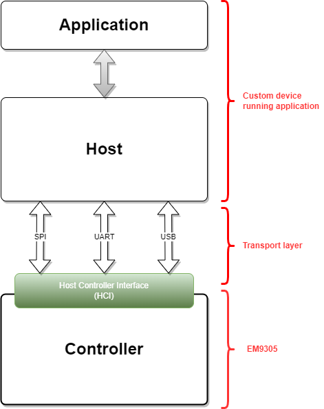

Bluetooth controller example
Overview
This application example configures the EM9305 to act as a controller only Bluetooth LE device. From the Bluetooth stack standpoint, this corresponds to the lower block related to the controller. It is shown in the picture below.
With this configuration, no profiles or services are implemented on the device, meaning that there is no host block implemented. The host block shall be implemented on another device and the interface between both is done through HCI commands which are sent on the transport layer. This can be through UART, SPI or USB. The selection of the transport layer is statically done at build time and cannot be dynamically changed. Consequently, this application waits for any incoming standard and non standard HCI command on one specific transport and executes this command as soon as it is received.
The BLEngine tool (tools\blengine\blengine_cli.py) can be used to send HCI commands using an EM9305 reference with the DVK. See below how to test this functionality.
This SDK comes along with a dedicated pre-built Bluetooth LE library controller that can be included to get the controller only behavior in the end user application. Refer to the CMakeList.txt file to see how to include this library in an end user application.
Build
The build targets of this example are:
nvm_emb_controller
cd <sdk>\build
cmake --build . --target nvm_emb_controller
Run
To program and run the example:
cd <sdk>\tools\blengine
python blengine_cli.py --port COMYY run emsystem_prog ..\..\build\projects\nvm_emb_controller\nvm_emb_controller.ihex --progress
With YY = the COM port number of your DVK (optional if you set it in the file <sdk>\tools\blengine\config.cfg).
Test
The following commands instruct the controller to configure and to start advertising with the specified intervals.
Advertising parameters:
Interval: 200ms
Type: Non connectable undirected advertising
Channel Map: 37, 38, 39
Device Name: EM9305_EMB_Controller
cd <sdk>\tools\blengine
python blengine_cli.py --port=COMYY --debug send Reset
python blengine_cli.py --port=COMYY --debug send LE_Set_Advertising_Parameters --Advertising_Interval_Min=0x0140 --Advertising_Interval_Max=0x0140 --Advertising_Type=0x03 --Own_Address_Type=0x00 --Peer_Address_Type=0x00 --Peer_Address=0x000000000000 --Advertising_Channel_Map=0x07 --Advertising_Filter_Policy=0x00
python blengine_cli.py --port=COMYY --debug send LE_Set_Advertising_Data --Advertising_Data_Length=0x1A --Advertising_Data=0x72656c6c6f72746e6f435f424d455f353033394d450916060102
python blengine_cli.py --port=COMYY --debug send LE_Set_Advertising_Enable --Advertising_Enable=0x01
With YY = the COM port number of your DVK (optional if you set it in the file <sdk>\tools\blengine\config.cfg).
The --debug option is optional. It allows to show the details of the packets sent and received.